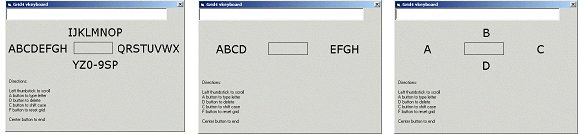
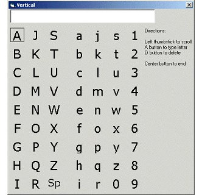
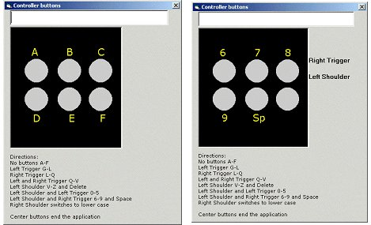
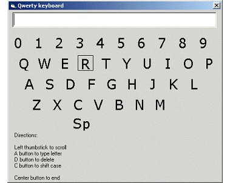
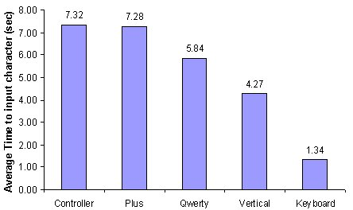
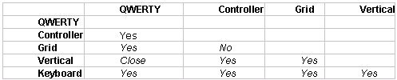

The first usability test we ran on virtual keyboards compared a controller button-mapped keyboard, a QWERTY, a vertical, a plus shape, and a regular PC keyboard. The favorite virtual keyboards were the vertical and the plus shape. Participants felt the plus was novel and fun to use, and that the vertical was simple to use and easy to figure out. The QWERTY and the controller-mapped buttons were the most disliked. Participants didn't like the QWERTY keyboard as a virtual keyboard, mainly because the design of the layout was a motor memory and they had to think more about where the letters were than in alphabetic layouts. The controller-mapped model required a lot of memory because the mapping of which letter was mapped to which individual keys changed frequently. Screenshots from each usability-tested model are presented below.
 |
| Plus |
 |
| Vertical |
 |
| Controller |
 |
| QWERTY |
The time necessary to type the characters was divided by the number of characters, so that the time for the different input types could be compared. The graph shows the time per character for each of the virtual keyboards.
 |
| Virtual Keyboard |
The data was analyzed using a repeated measures ANOVA. The primary factor was keyboard type, and we did a post hoc comparison of the different keyboards to each other. The table below shows which keyboards are different and not different from each other statistically.
 |
| Significant Differences Between the Layouts |
It is interesting to note that the Plus model was nearly the slowest model in the test and yet participants preferred it to other models. Many participants indicated that while they liked the vertical layout, they would prefer a horizontal layout. We made the decision based on that data to replace the vertical model with a horizontal model in subsequent virtual keyboard usability testing.